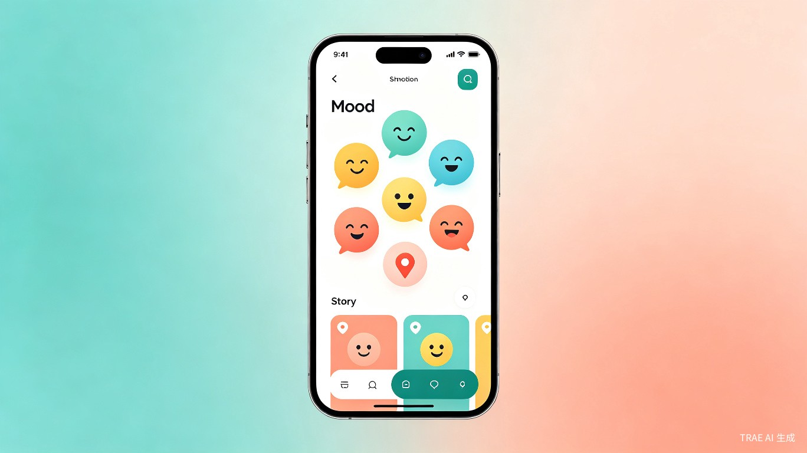
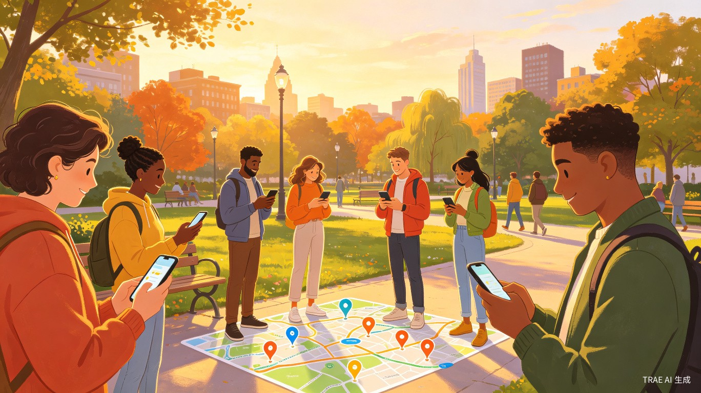

在世界的每一个角落，留下你的心情印记
基于地理位置的沉浸式社交分享平台
心迹地图（MapMood）是一款基于地理位置的社交分享应用，让用户能够在真实世界的每一个坐标点上留下自己的心情、故事和足迹。不同于传统社交平台以"人"为中心的信息流，心迹地图以"地点"为纽带，将情感与空间深度绑定，创造一种全新的"空间社交"体验。
用户可以在当前位置或任意指定地点发布"心情印记"——可以是一段文字、一张照片、一段语音，甚至是一幅手绘涂鸦。其他用户浏览地图时，可以看到周围区域散落的彩色情绪标记，点击即可阅读背后的故事，产生跨越时空的情感共鸣。
每一条内容都与真实地理坐标绑定，让记忆有迹可循，让情感落地生根。
用颜色和图标直观表达心情状态，地图上呈现出一幅城市情绪热力图。
基于位置的求助与回应，让邻里互助、陌生人善意成为日常。

用户可以选择多种内容形式在地图上"打卡"：
每条印记可选择公开、附近可见、或仅自己可见三种隐私级别。

当用户遇到困难时，可以发起位置绑定的求助信号：
求助响应者可获得"善意积分"，积分可兑换平台权益，形成正向激励。
聚合分析各区域用户情绪数据，生成实时城市心情地图，发现"快乐街区"和"治愈角落"。
设定未来某个时间或地点解锁的留言，给未来的自己或他人一份惊喜。
随机推荐附近有趣的心情印记，像开盲盒一样发现城市里的温暖故事。
自动生成个人情绪轨迹时间线，回顾自己在不同地点留下的心情变化。
当用户经过某个有特殊印记的地点时，自动推送相关故事通知。
与远方的朋友在各自城市同一时刻留下印记，创造跨越空间的共同记忆。
每天通勤路过同一个街角，想记录当下的心情却无处分享。朋友圈太公开，微博太嘈杂。
需要私密又开放的表达空间旅行中遇到绝美风景，想留下当时的心情和故事，让后来的旅行者也能感受到那份感动。
想与陌生人分享旅途感悟独居在家，有时需要帮忙取快递或买药，不好意思麻烦邻居，也不知道谁愿意帮忙。
需要便捷的邻里互助渠道刚到一个新城市上学，想快速了解校园周边哪里好吃、哪里安静适合学习。
需要真实本地生活信息传统社交平台过于公开，许多真实心情不敢发；过于私密又缺少共鸣。
城市化让邻里之间互不相识，需要帮助时找不到人，想社交却没有契机。
传统信息流按时间排序，优质内容被淹没，难以发现身边有趣的人和事。
重建邻里连接：在原子化的都市生活中，心迹地图通过地理位置天然地拉近用户距离，让"附近"重新成为有意义的社交单元。当求助可以被附近的人看到，善意就有了流动的渠道。
情绪健康支持：通过情绪可视化与匿名分享，为用户提供一个安全的情绪宣泄口。研究发现，将情绪与具体地点绑定有助于心理疗愈——回到那个地点，看到当时的自己，是一种特殊的自我对话。
本地生活入口：基于位置的内容天然适合与本地商家结合。情绪热力图可以指导商家选址，用户的高频位置数据可以精准推荐周边服务。
文旅场景应用：与景区、博物馆合作，打造"情绪导览"体验。游客在特定位置解锁历史故事或他人感悟，丰富游览体验。
flowchart TB
subgraph Client["客户端层"]
A1["iOS App"]
A2["Android App"]
A3["Web H5"]
end
subgraph Gateway["网关层"]
B["API Gateway
负载均衡/限流"]
end
subgraph Service["服务层"]
C1["用户服务"]
C2["内容服务"]
C3["位置服务"]
C4["消息服务"]
C5["推荐服务"]
end
subgraph Data["数据层"]
D1["PostgreSQL
+ PostGIS"]
D2["Redis
GeoHash"]
D3["MongoDB
内容存储"]
D4["Elasticsearch
全文检索"]
end
subgraph AI["AI能力层"]
E1["情绪识别"]
E2["内容审核"]
E3["智能推荐"]
end
A1 --> B
A2 --> B
A3 --> B
B --> C1 & C2 & C3 & C4 & C5
C1 & C2 & C3 & C4 & C5 --> D1 & D2 & D3 & D4
C2 & C5 --> E1 & E2 & E3
核心功能：地图展示、心情印记发布（文字+图片）、附近浏览、基础用户系统
增加语音印记、求助系统、情绪热力图、社交互动（点赞/评论/关注）
上线时光胶囊、AR印记、探索模式、个人足迹回顾、积分商城
开放API接入第三方、本地商家合作、文旅场景定制、国际化版本
心迹地图不仅仅是一个应用，更是一种重新连接人与空间、人与人的方式。在这个快节奏的时代，让我们慢下来，在地图上留下属于自己的温度。